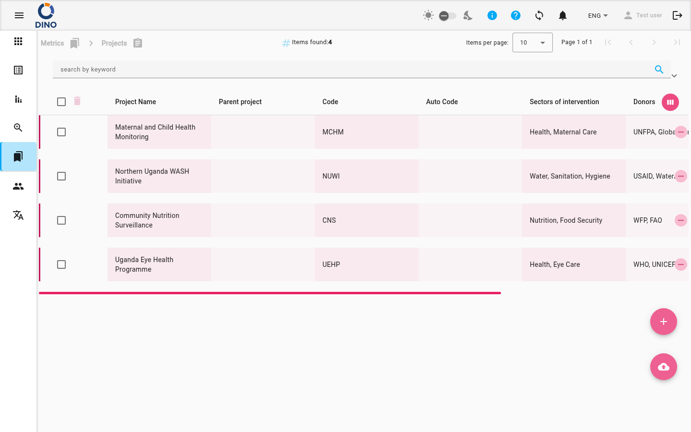

Progetti
La pagina Progetti in Dino ti consente di gestire tutti i tuoi record strutturati di progetti. Puoi visualizzare un elenco ordinabile di progetti, aggiungerne di nuovi, modificare quelli esistenti, eliminarli, importare dati in blocco ed esportare l'elenco per analisi offline. La pagina offre anche potenti strumenti di filtro per trovare rapidamente il progetto desiderato.

Come accedere ai Progetti
Per aprire la pagina Progetti, espandi la sezione Metriche dalla navigazione principale e seleziona Progetti. L'URL del browser terminerà con /metrics/projects.
Comprendere l'elenco dei progetti
La tabella principale mostra un elenco di tutti i progetti. Ogni riga corrisponde a un progetto e visualizza le seguenti colonne predefinite:
- Nome progetto – Il nome del progetto. Puoi ordinare l'elenco per questa colonna.
- Progetto padre – Il progetto di livello superiore a cui appartiene questo progetto, se presente.
- Codice – Un codice progetto assegnato manualmente.
- Codice automatico – Un codice generato automaticamente. Questo campo è di sola lettura e non può essere modificato.
- Settori di intervento – I settori su cui si concentra il progetto.
- Donatori – Le fonti di finanziamento del progetto.
- Data inizio – La data di inizio del progetto.
- Data fine – La data di fine del progetto.
Le colonne nascoste (ID, Data di creazione e Attributi aggiuntivi) possono essere visualizzate cliccando sul pulsante Personalizza colonne (l'icona ha l'aspetto di una vista settimanale) nell'angolo in alto a destra della tabella.
Campi di sola lettura
Il campo Codice automatico viene generato automaticamente e non può essere modificato. Apparirà in grigio nella finestra di modifica.
La barra degli strumenti superiore mostra il numero totale di elementi trovati e un paginatore. Puoi scegliere quanti progetti visualizzare per pagina.
Gestione dei progetti
Aggiungere un nuovo progetto
- Clicca sul pulsante mobile Aggiungi nuovo (l'icona + cerchiata) in basso a destra dello schermo.
- Si apre una finestra di dialogo in cui inserire i dettagli del progetto. I campi obbligatori sono contrassegnati di conseguenza.
- Premi Salva per creare il progetto. Apparirà immediatamente nell'elenco.
Modificare un progetto
- Nella riga del progetto che desideri modificare, clicca sull'icona modifica (matita).
- Modifica i campi nella finestra di dialogo. Il campo Codice automatico sarà in grigio.
- Clicca su Salva per applicare le modifiche.
Visualizzare un progetto
- Clicca sull'icona visualizza (occhio) nella riga del progetto per aprire una versione di sola lettura della finestra dei dettagli del progetto.
Eliminare un progetto
- Clicca sull'icona elimina (cestino) nella riga del progetto.
- Conferma l'eliminazione nella finestra pop-up. Il progetto verrà rimosso definitivamente.
Eliminazione di un progetto
Eliminare un progetto lo rimuove dal sistema. Questa azione non può essere annullata. Assicurati di aver selezionato il progetto corretto prima di confermare.
Ricerca e filtri
La barra ricerca e filtri si trova sotto il percorso di navigazione. Puoi:
- Cercare per parola chiave – Digita un termine qualsiasi nel campo della parola chiave; l'elenco si filtra automaticamente.
- Filtrare per intervallo di date – Usa i selettori Da data e A data per restringere i progetti in base alla data di inizio o di fine.
- Applicare filtri aggiuntivi – Clicca sul pulsante elenco filtri (icona a imbuto) per aprire una finestra di dialogo con filtri più avanzati, come settori, donatori o altri attributi personalizzati.
- Salvare e caricare preset di filtri – Usa il gestore dei preset per salvare la combinazione di filtri corrente e ricaricarla in seguito.
I chip di filtro appaiono sotto la barra dei filtri, mostrando i filtri attivi. Puoi rimuovere i singoli chip cliccando sull'icona annulla su ciascuno.
Esportazione e importazione
Esportare progetti
- Clicca sul pulsante esporta (icona di download dalla nuvola) nella barra dei filtri.
- Scegli il formato di esportazione (ad esempio CSV, Excel) e le colonne da includere.
- Il file verrà scaricato sul tuo computer.
Importare progetti
- Clicca sul pulsante mobile importa (icona di upload dalla nuvola) in basso a destra.
- Carica un file formattato correttamente (ad esempio CSV o Excel). Il sistema creerà o aggiornerà i progetti in base ai dati.
- Esamina i risultati dell'importazione per eventuali errori o avvisi.
Azioni di massa
Puoi selezionare più progetti utilizzando le caselle di spunta a sinistra di ogni riga. Una volta selezionato almeno un progetto, la barra degli strumenti sopra la tabella mostra le azioni di massa:
- Elimina selezionati – Rimuove tutti i progetti selezionati dopo la conferma.
- Modifica selezionati (modifica in blocco) – Apre una finestra di dialogo in cui puoi modificare un campo comune per tutti i progetti selezionati contemporaneamente.
Dopo la modifica o l'eliminazione in blocco, l'elenco si aggiorna automaticamente.